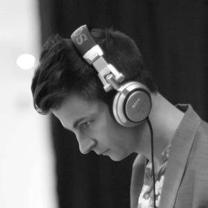

 Below is a collection of mixes I've made since 2008. The live recordings are unedited.
All copyright belongs to the artists, please support their work by buying it and/or paying for streaming services that compensate them.
Here's what I've been listening to lately.
New Skies (January 2014)
Gold Panda – Reprise
Mr Beatnick – Sun Goddess
Tropics – Popup Cinema
Daniel Avery – Simulrec
Dawn of Midi – Algol
DJ Koze vs. Hildegard Knef – Ich schreib' dir ein Buch 2013
John Talabot – Last Land
Deptford Goth – Union
Mountains – Propeller
DUSP End of the Year Party (May 2013)
(Recorded live at Boston Society of Architects)
Early On (December 2012)
(Recorded live at 99 Fridays, MIT Media Lab)
Flying Lotus - Getting There
XXYYXX - Set It Off
Dam Funk - Hood Pass Intact
Mount Kimbie - Before I Move Off
Joy Orbison - Love Cry (Four Tet Remix)
John Talabot - Last Land
Nicolas Jaar - And I Said (Xinobi Remix)
Dauwd - What's There
Amen Ra - Akashic Visions
Bombye (May 2012)
Gold Panda - India Lately
Andres - Don't Fall In
MF Doom - Money Folder (Four Tet Remix)
Vishwa Mohan Bhatt live at Mahalaxmi Race Course
Dauwd - What's There
Tiger and Woods - Sample
Toto - Georgy Peorgy (Satin Jackets Edit)
6th Borough Project - Just A Memory
Hugh Masakela - Don't Go Lose It Baby
Dennis Parker - Like an Eagle
? - Out to Get You
Beatles - Sun King
Kinks - This Time Tomorrow
Alessi Brothers - Seabird
Khartoum Radio Mix (October 2011)
satyajit ray – unknown
jorge ben – meus filhos, meu tesouro
liquid liquid – optimo
wade nichols – wanda rode again
the who – eminence front (supreme edit)
glichy dan – cowboys and gangsters
radiohead – little by little (caribou remix)
prince – erotic city
bourne toulouse – my fantasy
metro area – machine vibes
sbtrkt – pharaohs
sly mongoose – snakes and ladder
jesse rose – evening standard
munk – violent love (the twelves remix)
toro y moi – still sound (toby tobias deep dub)
femi kuti – truth don die (kerry chandler mix)
javi p3z – el safari
jamie jones – summertime
jacques renault -
todd terje – ragysh
suzy q – tonight
tiger and woods – gin nation
unknown – higher
margo guryan – love
It's Going To Be An Indian Summer (March 2011)
blackstratblues - cowboys and indians
nicolas jaar - mini calcutta
gold panda - india lately
oOoOO - mumbai
charanjit singh - raga bairagi (lento re-edit)
ananda shankar - dancing drums
maker - mango lassi
After The Head Rush III (April 2011)
thelonius monk - evidence
ben folds five - your most valuable possession
endless boogie - morning line dirt
colder - this river
the doors - ghost song
erik omen - cisco walk (insert male voice)
wooden shjips - lucy's ride
the laughing light of plenty - the rose
trus'me - working nights
yellow magic orchestra - simoon
donald byrd - night whistler
serge gainsbourg - la javanaise
After The Head Rush II (October 2010)
junior boys – high come down
four tet – she just wants to fight
king midas sound – one ting (dabrye remix)
daft punk – something about us
dam funk – chocolate
michael mcdonald – i keep forgettin’
shuggie otis – strawberry letter 23
christopher o’riley – everything in its right place
santo and johnny – tear drop
After The Head Rush I (February 2008)
aphex twin – bbydhonchord
stateless – bloodstream (pilooski edit)
midlake – roscoe (beyond the wizard’s sleeve remix)
fleetwood mac – dreams
kings of convenience – weight of my words (four tet remix)
the studio – west side
cosmo vitelli – the sleep lab
edith piaf – sous le ciel de paris
Dreams (2008)
imagination - just an illusion (lindstrom vocal remix)
low motion disco - love love love (aeroplane mix)
fleetwood mac - everywhere
woolfy - odyssey
hall & oates - i can't go for that
grackle - jungle (t keeler & capablanca mix)
cut copy - hearts on fire (aeroplane remix)
panthers - goblin city (holy ghost disco dub)
ace - how long
gotye - heart's a mess (supermayer remix)
boney m - down (prins thomas alternate version)
invisible conga people - cable dazed
quiet village - pillow talk
Psychedisco (2008)
rufus wainwright - tiergarten (supermayer's supermess mix)
botox - babylon by car (richard sen mix)
in flagranti - paroli
padded cell - savage skulls
hercules & love affair - athene
kathy diamond & aeroplane - whispers
studio - life's a beach (todd terje version)
lifelike & kris menace - discopolis
sir drew - shemale (black strobe mix)
chicken lips - bad skin
tomboy - player play on (slow vinyl dub)
chateau flight - baltringue (body language version)
the paper dolls - get down boy
michael wilson - groove it to your body (instrumental)
esg - dance
vaughan manson - rollalong songs
hot chocolate - heaven's in the back seat
donald byrd - love has come around
sister sledge - lost in music
High Maintenance Volume II (February 2008) - rough edit
Crazy gang - Telephone computer
Love Is All - Make out fall out make up (chicken lips remix)
Schaeben & voss - Cold wind
Booka Shade - In White Rooms
Robag wruhme - Dopamin
Felix Da Housecat - What does it feel like? (rokysopp's sun mix)
In Flagranti - We make love in a house of glass
Still Going - Still going theme
Metro Area - Miura (maelstrom edit)
Pase Rock - So Fucking Disco
Lcd soundsystem - Shame on You
The glimmers - Time for action
Bell X1 - Flame (chicken lips mix)
Bumblebee Unlimited - Ladybug
High Maintenance Volume I (January 2008)
sebastien tellier - sexual sportswear
lcd soundsystem - get innocuous
holy ghost - hold on
hot chip - over and over (maurice fulton remix)
plantlife - love me til it hurts
tomboy - samba
feist - my moon my man (boyz noize remix)
joakim - drumtrax
panthers - goblin city (holy ghost disco dub)
roy ayers - run run run / everybody loves the sunshine